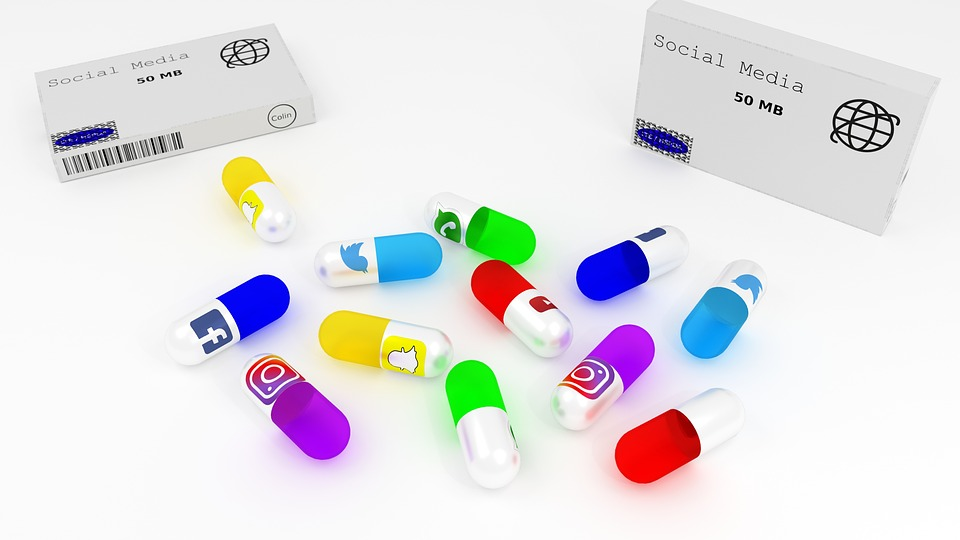

Las grandes empresas usan tres mecanismos en particular para manipular,monitorear,registrar y medir cada una de nuestras acciones.Un sistema llamado "Capitalismo de vigilancia" que busca entre todas sus cosas,asegurar el éxito de los anunciantes, otro llamado la "Tecnología persusiva" que busca crear una acción inconsciente en ti a través de una acción determinada y por último uno llamado "Técnicas de crecimiento acelerado" que busca que invites más y más personas a ser parte de algo en particular.
Es un tipo de mercado dedicado a negociar con los datos de millones de personas para mantenerlas activas en las pantallas, donde los principales beneficiarios de dicha acción son las empresas, desde marcas de ropa hasta políticos y entidades gubernamentales, que pagan millones por promocionar productos,servicios e ideas a usuarios que estén dispuestos a participar de ello.Cuantos más minutos,se genera más audiencia y, consigo, más inversores interesados en esa marca que se está promocionando.
Entre más horas se pase en estos dispositivos, más expuesta esta la información personal sobre los hábitos, gustos e intereses de consumo.Al exponer estos datos, son recopilados y organizados mediante algoritmos que se optimizan hacia una de definición de éxito , regulados por mecanismos de me gusta, comentarios, tiempos de lectura y cuanto duras en visualizar una imagen, el historial de actividad y búsqueda, el perfil de personalidad a partir de lo que expresas, entre otros.Todas nuestras acciones, todos los clicks , todos los videos, todos los me gusta se integran para construir un modelo más preciso y a partir de ese modelo se puede predecir acerca de lo que haremos y de quienes somos.
Es un diseño aplicado con la intención de modificar el comportamiento.Quieren que no dejes de deslizar con el dedo, si deslizas el dedo en la pantalla hay algo nuevo hasta arriba , así es cada vez que lo haces y a eso en psicología se le llama reforzamiento positivo interno intermitente donde se plantea un hábito insconciente en cada uno de nosotros , para programarte desde un nivel tan profundo que no te des cuenta.
Consiste en un equipo de ingenieros que hackean la psicología de las personas para que seguir creciendo, mediante más usuarios para que te enganches e invites a más personas
Facebook ,Instagram y las demás redes sociales: Realizan experimentos de contagio a gran escala para manipularnos sin que nos demos cuenta y ganar mucho dinero, pasamos de una tecnologia vista como una herramienta, a una tecnologia basada en la adicción y manipulación.
"Cualquier tecnología suficientemente avanzada es indistinguible de la magia" - Arhur C. Clarke
Los magos fueron los primeros en comprender cómo funciona la mente humana ya que experimentan con personas en tiempo real.Un mago comprende una parte de nosotros de la que no somos conscientes eso hace que la ilusión de resultados sin importar la profesion son vulnerables, esa disciplina aparte abarca a todos los seres humanos y desde esa perspectiva se puede entender lo que hace la tecnología.
"Solo hay dos industrias que llaman “usuarios” a sus clientes: El narcotráfico y la tecnología" - Edward Tufte

Las redes sociales son unas drogas ,estamos programados biológicamente para conectar con otras personas mediante un vehículo que optimiza esa conexión convirtiéndose en algo adictivo.Cada persona tiene su propia realidad con sus propias verdades.
Google,Facebook y Youtube:Cuando quieres obtener información sobre un tema en específico vas a recibir resultados diferentes dependiendo de donde vives,no es en función de la verdad sino en función de dónde estas entrando y en función de lo que se sabe sobre ti.De esta manera, es más común que se presenten fake news y mensajes de odio que por alguna extraña razón, viajan 6 veces más rápido que las noticias reales, ya que generan más dinero a las compañias porque la verdad es aburrida.
Aparecen como los grandes enemigos de la sociedad de hoy en día, poniendo ejemplos tan actuales como el volumen de información falsa que rodea al coronavirus.Sin duda, esta información no veridica, influyen y cambian el comportamiento de las personas.
Brithney Remarchuk 2022 - Producto desarrollado para fines educativos del Servicio Nacional de Aprendizaje - SENA